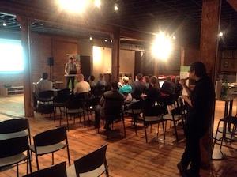
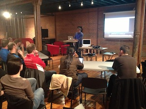

March Meetup
RSVP
RSVP
Scheduled Talks
Note: as usual there will be snacks and beverages provided. Thanks to Redman Technologies, our monthly sponsor, and to Startup Edmonton for the venue.
-
#300, 10363-104 Street
Building B,
Edmonton, Alberta
February Meetup
Event Archive
Event Archive
This months topics are below. I've linked in some "spoilers" incase you want to know more about the subjects before hand (if you're feeling like a keener this month.)
Scheduled Talks
-
JavaScript Module Patterns
by @dangerbell. -
Meteor
by @interstateone. -
Promises
by @markbennett.
Note: we'll be enjoying food and beverages toward the start of the evening. Our thanks to Redman Technologies for sponsoring our snacks and to Startup Edmonton for hosting us each month.
-
Building B,
Edmonton, Alberta
Meetup #3 Notes Thursday, Jan 10
Thanks to everyone who came out to our third meetup! It is great to see the momentum growing each month.
Talks
-
Understanding Frontend MVC (with Knockout.js examples) - Slides
with @aaronfay. -
Mouse/touch input on mobile with JS, HTML5, Canvas & SVG - Slides (PDF)
with @abramh. -
Batman.js Introduction & Demos
with @ryanonrails.
News
New/Updated Libraries
-
jQuery 1.9 Beta 1 Released
jQuery 1.9 has removed many of the items that were deprecated during the last few versions. Their upgrade guide provides help with moving to the new version.
-
Backbone.js 0.9.9 Released
A 'preview of what Backbone 1.0 will be' ... we should 'kick the tires, and report issues.' (Note: This is the first version bump since March 2012)
-
Amazon Web Services SDK for Node.js – Now Available in Preview Form
This SDK, direct from Amazon, allows you to access Amazon Web Services (S3, Elastic Compute Cloud, DynamoDB, etc.) from Node.
-
Node v0.8.17
This release addresses a potential security vulnerability (TypedArrays)
(Also noteworthy: the Streaming API in v0.10)
New/Updated Libraries
-
WebRTC Hits Firefox, Android and iOS
WebRTC (Web Real-Time Communication) is becoming increasingly more prevalent and better supported in Web browsers. See Getting Started with WebRTC.
-
WebRTC Hits Firefox, Android and iOS
Faster IonMonkey JavaScript JIT compiler, support for Mac 'Retina' displays, and preliminary WebRTC support.
-
Neat: A Sneak Peek At CSS Media Type Emulation in Chrome's Dev Tools
CSS media types allow you to apply different styles to a page depending on the medium it is being used through and the DevTools in Chrome Canary now support 'emulating' different CSS media types, allowing you to test more easily.
Reading
-
Results of the 2012 DailyJS JavaScript Developer Survey via DailyJS
-
Implementing Push Technology Using Server-Sent Events
Server-Sent Events allow servers to notify clients. They are an alternative to WebSockets for many tasks. Also see HTML5 Server-Sent Events with AngularJS, Node.js and Express.js.
Looking for a job?
New/Updated Libraries
-
jQuery 1.9 Beta 1 Released
jQuery 1.9 has removed many of the items that were deprecated during the last few versions. Their upgrade guide provides help with moving to the new version. -
Backbone.js 0.9.9 Released
A 'preview of what Backbone 1.0 will be' ... we should 'kick the tires, and report issues.' (Note: This is the first version bump since March 2012) -
Amazon Web Services SDK for Node.js – Now Available in Preview Form
This SDK, direct from Amazon, allows you to access Amazon Web Services (S3, Elastic Compute Cloud, DynamoDB, etc.) from Node. -
Node v0.8.17
This release addresses a potential security vulnerability (TypedArrays)
(Also noteworthy: the Streaming API in v0.10)
New/Updated Libraries
-
WebRTC Hits Firefox, Android and iOS
WebRTC (Web Real-Time Communication) is becoming increasingly more prevalent and better supported in Web browsers. See Getting Started with WebRTC. -
WebRTC Hits Firefox, Android and iOS
Faster IonMonkey JavaScript JIT compiler, support for Mac 'Retina' displays, and preliminary WebRTC support. -
Neat: A Sneak Peek At CSS Media Type Emulation in Chrome's Dev Tools
CSS media types allow you to apply different styles to a page depending on the medium it is being used through and the DevTools in Chrome Canary now support 'emulating' different CSS media types, allowing you to test more easily.
Reading
- Results of the 2012 DailyJS JavaScript Developer Survey via DailyJS
-
Implementing Push Technology Using Server-Sent Events
Server-Sent Events allow servers to notify clients. They are an alternative to WebSockets for many tasks. Also see HTML5 Server-Sent Events with AngularJS, Node.js and Express.js.
Looking for a job?
We had a few job shout-outs again on Thursday night, though not quite as many as at Demo Camp 20 which happened a few days prior (recap).
- Jobber: front-end developer
- Stathcom: front-end (Backbone) JavaScript developer
- Redman Tech: AngularJS/front-end, PHP/Node/backend developer(s)
January Meetup
Event Archive
Event Archive
Happy New Year! Our third meetup is quickly approaching. We're breaking our (short lived) tradition of running the meetup on the first Thursday of the month due to the close proximity to the holidays.
We'll again be at Startup Edmonton with the possibility of a field trip to Mercer Tavern afterward.
Scheduled Talks
-
Frontend MVC (with Knockout.js examples)
by @aaronfay. -
SVG and Canvas (on Mobile)
by @abramh. -
Batman.js Introduction & Demos
by @ryanonrails.
Note: we'll be enjoying food and beverages toward the start of the evening. Our thanks to Redman Technologies for sponsoring our snacks.
-
Building B,
Edmonton, Alberta
Meetup #2 Notes Thursday, Dec 6
Although our second meetup fell on night of dismal weather (again), around 20 local developers managed to shovel their way out of the snow to join the discussions.

A page of Sharpie-pen scratched notes from the meetup have since disappeared, but there was only a few smaller news discussed at this meetup anyway.
Talks
- Amber (Smalltalk in JavaScript) with Daniel Huckstep (@darkhelmetlive)
- Socket.io with Nick Barth
- AngularJS with Mark Bennett (@MarkBennett)
Honourable Mentions
A few user groups and events were passed along:- Edmonton R User Group
- Edmonton Functional Programming User Group
- YEGRB (Ruby Meetup)
- December 7's Code Retreat
December Meetup
Event Archive
Event Archive
It is almost time for our second meetup. The details are mostly the same as our November meetup as Startup Edmonton is graciously hosting Exchange.js again. There is also the possibility of heading to Mercer Tavern afterward to talk shop.
The schedule, speakers and topics will be announced closer to December 6. If you're interested in presenting an informal talk, demo, or other content please get in touch via social media or the Google Group.
To RSVP or find the latest information on this meetup please see our Facebook Event.
We'll be enjoying pizza and beverages toward the start of the evening. Our thanks to Redman Technologies for sponsoring December's snacks.
-
Building B,
Edmonton, Alberta
Meetup #1 Notes Thursday, Nov 1
Thanks to the 18 local JavaScript developers who made it out to our first official meetup (especially considering the poor weather.)
After a round of introductions, Sean Ouimet opened the meeting with an overview the history, goals and plans for the group. (Slides from the meetup.)
News Items & Links
-
jQuery Mobile 1.2
- New Popup Widgets (tooltip, menu, popup form, map overlay, or lightbox.)
- List Views: Collapsible, Auto-dividers (alphabetical.)
- Other visual improvements, 1.7.8 and 1.8.2 support (1.8.x reduces support to C-grade, see notes.)
-
Express 3.0
- If upgrading, see the Migration Guide for helpful advice.
- Built on the Connect 2.0 API.
-
Underscore 1.4.0
- new: pairs (object to [key, value]) and object (the reverse)
- new: where, omit (filter objects with specific values, keys)
-
Twitter Bootstrap was quickly discussed an it turned out that almost everyone in the meetup has used the framework in some capacity (including in production projects.) Some useful resources were suggested by attendees:
- Bootstrap Hero has a useful newsletter that offers practical advice and best practices.
- Bootsnip is a gallery of design elements and code snippets that fit well in to Bootstrap. Examples include calendar widgets, popup sign in and video controls.
Jobs
This month we had four companies pitch what they do and that they were hiring. In general I’d say all four are looking for a mix of experience within a wide range of skills (from frontend to backend) so I won’t break things down further.
- Darkhorse Analytics via @ideaOwl
- Mailout Interactive via @industrymailout
- Mover.io via @EricWarnke and @Mover_io
- Redman Technologies via @SkepticSean and @RedmanTech
Talks
- Introduction to Yeoman.js with Matthew Willox
- API Testing in Node (with Mocha, Supertest, and Nock) with Greg Bell (Notes & blog post)
How to connect to the group:
Our Inaugural Monthly Meetup
Event Archive
Event Archive
After a soft launch in the spring of 2012 it is time to get Edmonton's newest tech meetup off the ground!
For now the plan is to have Exchange.js meet on the first Thursday each month. We've worked with Startup Edmonton to secure a space for both November 1 and December 6.
Redman Technologies will be sponsoring pizza and beverages. Afterward we'll find a nearby pub (likely Mercer Tavern) those who are interested.
To RSVP or find the latest information on this meetup please see our Facebook Event.
-
Building B,
Edmonton, Alberta